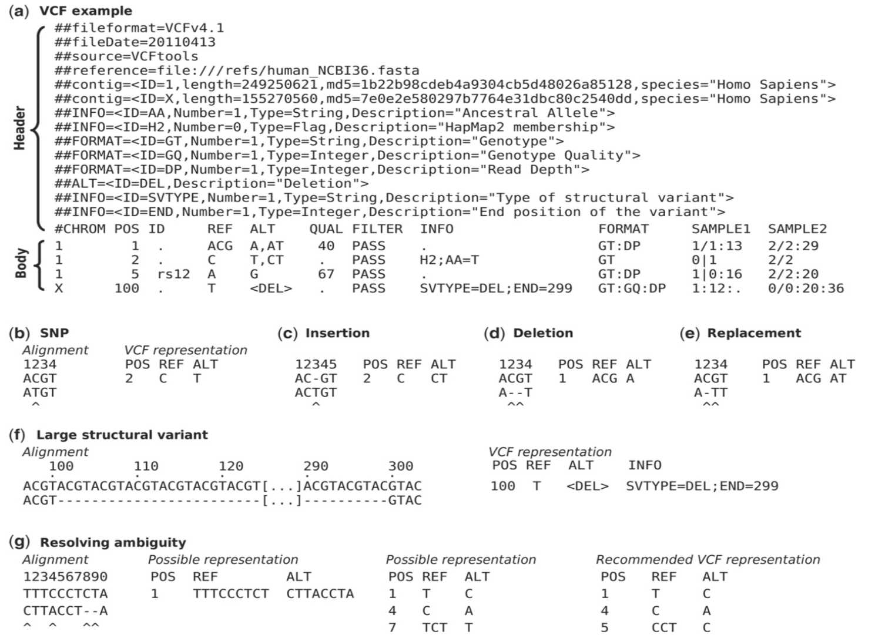

VCF format
For the full specification, see the VCF format specification.
VCF (Variant Call Format) is the standard text format for storing genetic variants: the places where a sample’s sequence differs from a reference. This includes single-nucleotide polymorphisms (SNPs), insertions and deletions (indels), and larger structural variants.
Format
A VCF file has a header section followed by one data line per variant.
Header lines begin with ## and describe the file and the meaning of
the fields used below; the single line beginning with #CHROM names
the columns. Each variant record has eight required, tab-separated
fields:
CHROM — the chromosome the variant is on.
POS — the 1-based position of the variant on the chromosome.
ID — an identifier for the variant (for example a dbSNP
rsnumber), or.if none.REF — the reference allele (the base(s) in the reference).
ALT — the alternate allele(s) observed in the sample.
QUAL — a Phred-scaled quality score for the assertion that a variant is present.
FILTER —
PASSif the variant passed all filters, or a list of the filters it failed.INFO — a semicolon-separated list of additional annotations.
The figure below shows an example from the specification:
{kind=link}

An example VCF file with its header lines and several variant records. Source: VCF format specification.
Software that use VCF format
VCF is produced and consumed by most variant-focused tools:
GATK — variant calling and filtering.
Samtools / BCFtools — variant calling and VCF manipulation.
SnpEff — annotating variants with their predicted effects.
VCFtools — filtering and summarizing VCF files.
dbSNP — a public database of known variants.
How are these files generated?
VCF files are the output of a variant-calling pipeline: reads are aligned to a reference, the alignments are processed, and a variant caller compares the sample to the reference to produce the list of differences. For a full worked example of such a pipeline, see the whole genome sequencing walkthrough.